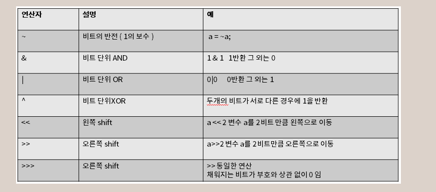

char > 무조건 ' ' , 단일문자
String > 무조건 " "
length() > 문자열 길이
toUpperCase() > 모두 대문자로 변경
toLowerCase() > 모두 소문자로 변경
indexOf("string") > string이라는 단어 처음 나오는 위치 변환
concat(연결하고 싶은 문자열 변수명) > 문자열 연결
\' , \" , \\ > 문자열에 ' , " , \ 삽입
줄 바꿈 개행문자 or 메소드
\n - unix한정 , \r - max한정 , /r/n 이란 것도 있음
System.getProperty("line.separator")
System.lineSeparator()
if문
int time = 20;
if (time < 18) {
System.out.println("Good day.");
} else {
System.out.println("Good evening.");
}
변형 if문
int time = 20;
String result = (time < 18) ? "Good day." : "Good evening.";
System.out.println(result);
--------------------------------------------------------------------
array_ex > String[] cars = {"Volvo", "BMW", "Ford", "Mazda"};
array
String[] cars = {"Volvo", "BMW", "Ford", "Mazda"};
for (int i = 0; i < cars.length; i++) {
System.out.println(cars[i]);
}
for-each loop
String[] cars = {"Volvo", "BMW", "Ford", "Mazda"};
for (String i : cars) {
System.out.println(i);
}
2차원 배열
int[][] myNumbers = { {1, 2, 3, 4}, {5, 6, 7} };
System.out.println(myNumbers[1][2]); // Outputs 7
